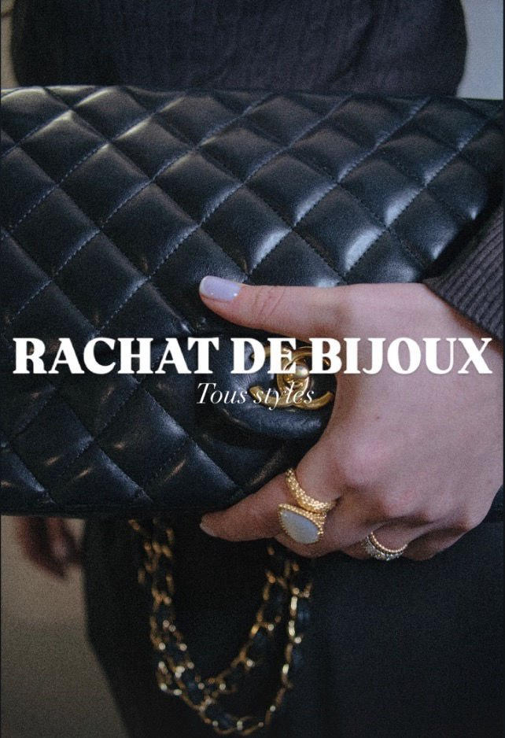
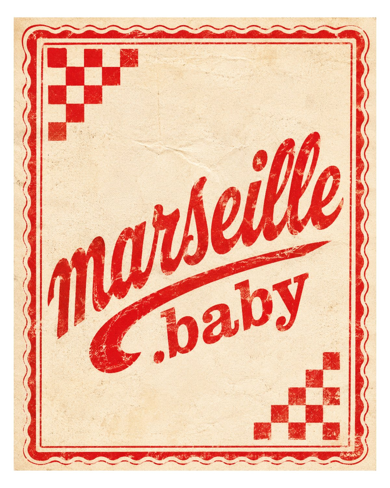
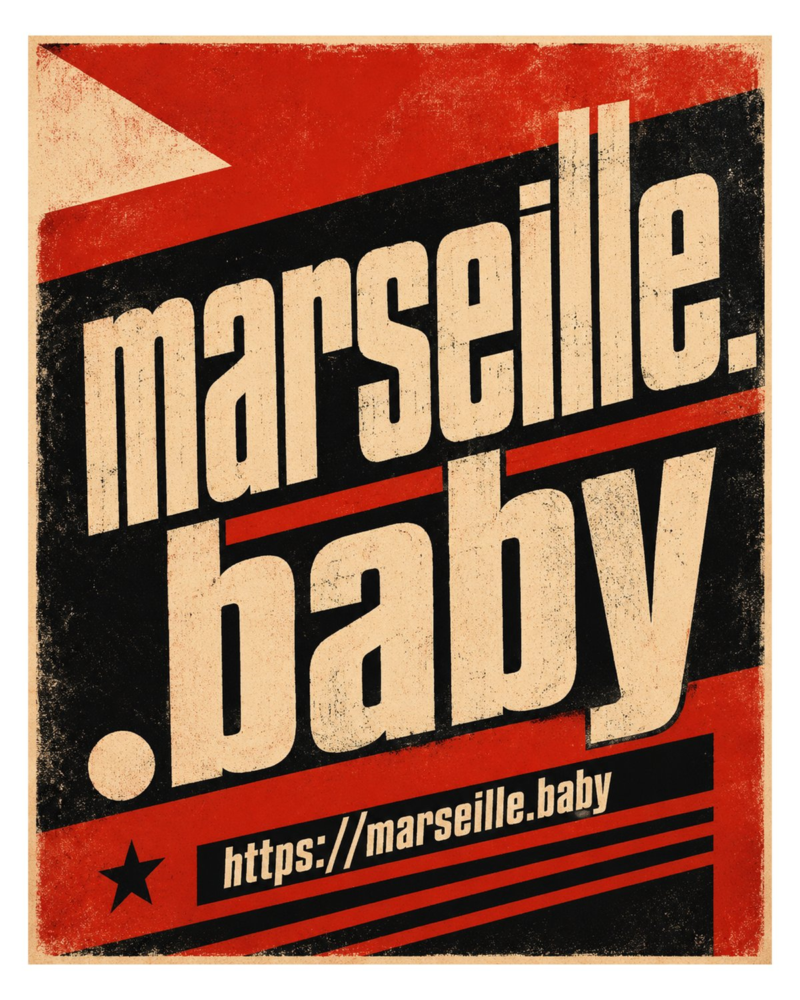

Communication · Mode · Éditorial
Lola
Centeno
Direction artistique, communication éditoriale et image de marque — freelance, Paris.
Une pratique
hybride.
Je travaille la communication entre ligne éditoriale, image et stratégie de marque — de la recherche visuelle à la rédaction, en passant par la coordination de shootings.
Mon portfolio réunit trend books, journaux digitaux, analyses magazine et shootings photo. Une curiosité analytique pour les tendances émergentes, la composition visuelle et le langage des marques de mode et de luxe.
Regard
éditorial.
Travaux visuels et éditoriaux — book, shootings et recherches.
Book — Lola Centeno Real


Shooting photo


EuroPièceD’Or — contenus



Recherche visuelle


Version complète du portfolio, 5 pages · 2026.
Parcours
& terrain.
-
2025 — 2026
Community Manager — alternance
EuroPièceD’Or — Paris
Social media, création de contenus, calendriers éditoriaux, growth hacking et coordination inter-équipes.
-
2026
Stage d’observation
CMP et CATTP — Groupe Hospitalier Psy Paris Sud Paul Guiraud
Observation de consultations psychiatriques et entretiens cliniques.
-
2025
Directrice artistique junior — stage
The Off-Note — Paris
Campagnes créatives social & print, Gantt charts, Slack, benchmark et analyse sémantique.
-
2024
Assistante directrice de création — stage
The Parisian Vintage & The Off-Note — Paris
Coordination visuelle, suivi shootings, veille concurrentielle et trend books.
-
2024
Conseillère de vente — stage
Isabel Marant — Paris
Conseil client, merchandising, CRM et stratégies de théâtralisation retail.
-
2024
Hôtesse d’accueil polyvalente — CDD
La Fabrica — Paris
Accueil client, gestion des stocks et réservations.
-
2024
Assistante coordination défilé — CDD
Fashion Week AW — Celinekwan, Paris
Logistique show, styling, fittings et coordination équipe production.
-
2026
Bachelor Commerce de la mode et luxe
LISAA Mode Paris — formation bilingue
Certification LVMH · Operations & Supply Chain + Retail & Customer Experience (2024).
Travaux &
publications.
Projets éditoriaux disponibles en lecture et téléchargement.
Travaillons
ensemble.
Disponible pour missions en communication, direction éditoriale et création de contenus mode & luxe.
lolacenteno03@gmail.comParcours et expériences — format PDF.